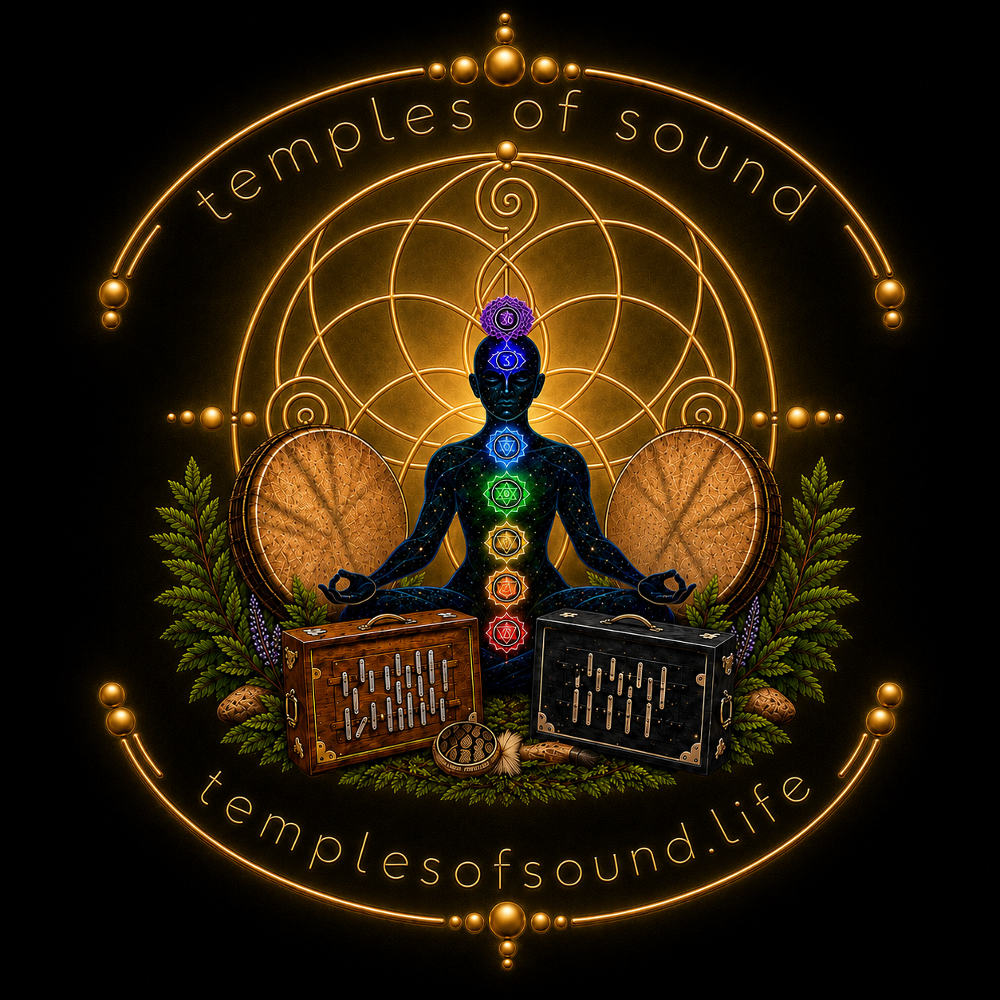

Welcome to Temples of Sound
Temples of Sound is a space for energy work through singing meditation.
We believe meaningful change begins with a calm, regulated nervous system. Sound offers a way back to that state, supporting well-being, presence, and reconnection.
Regular gatherings create space to sound, meditate, regulate, and grow while fostering a vibrant community dedicated to personal growth and collective connection. Instruments are available to share, and you’re always welcome to bring your own.
Explore our events
Come cluttered, leave calm.
Sound together. Listen inward. Make space to hear.
Our journey to sound and healing
Temples of Sound began with a simple discovery: the steady drone of the shruti box could create a powerful space for meditation, sounding, and nervous-system regulation.
What started as a personal practice gradually became something to share. As voices met the drone, it became clear that no musical training or performance was required. The practice was simply an invitation to breathe, make sound, listen, and experience what unfolds.
Over time, those shared experiences grew into regular gatherings and a wider community centered around sound, presence, and well-being.
Today, Temples of Sound is rooted in the belief that meaningful change begins with a calm, regulated nervous system. Through sounding, meditation, and shared presence, we create space for personal growth, collective connection, and a deeper relationship with our own voices.
Temples of Sound grew from the desire to share sound medicine with others.
Discover your inner calm
Join the Temples of Sound community and experience the transformative power of singing meditation. Find harmony, reduce stress, and connect with a supportive network in Portland, Oregon.
Explore upcoming events